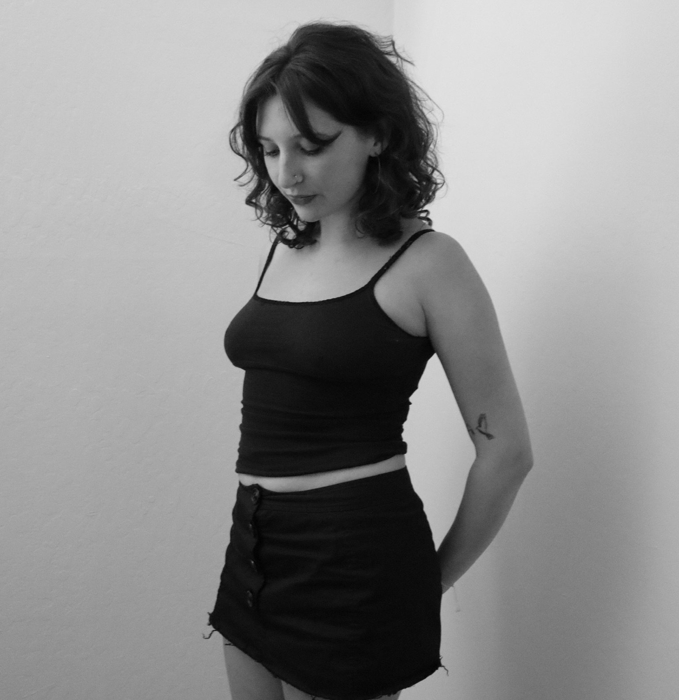
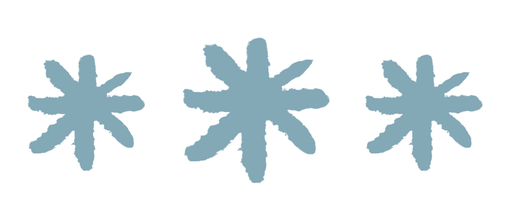
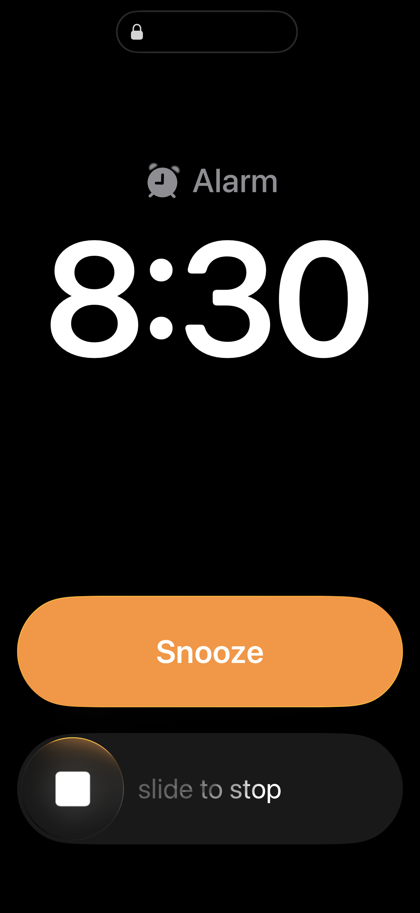
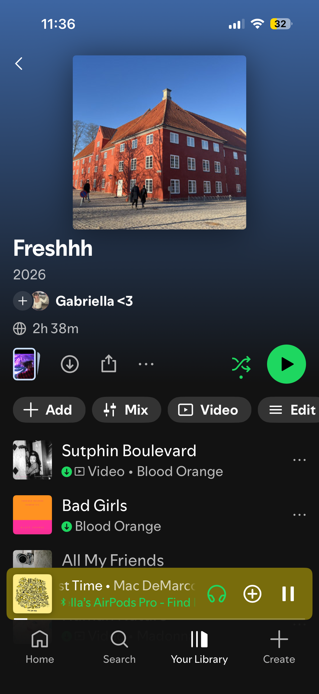
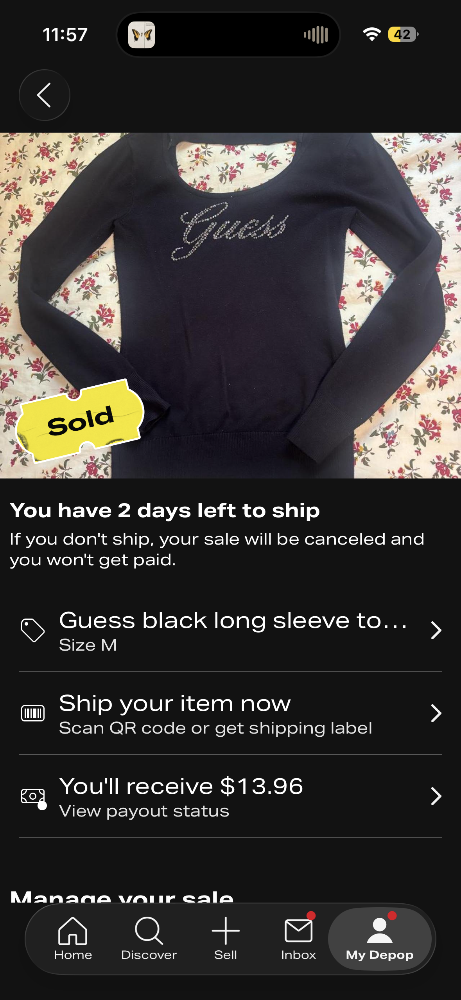
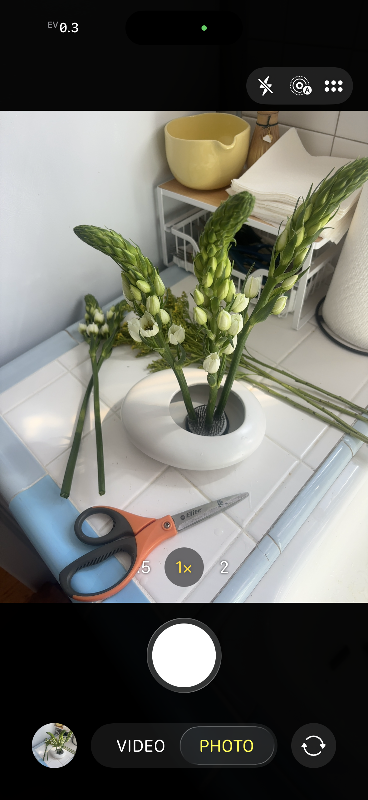
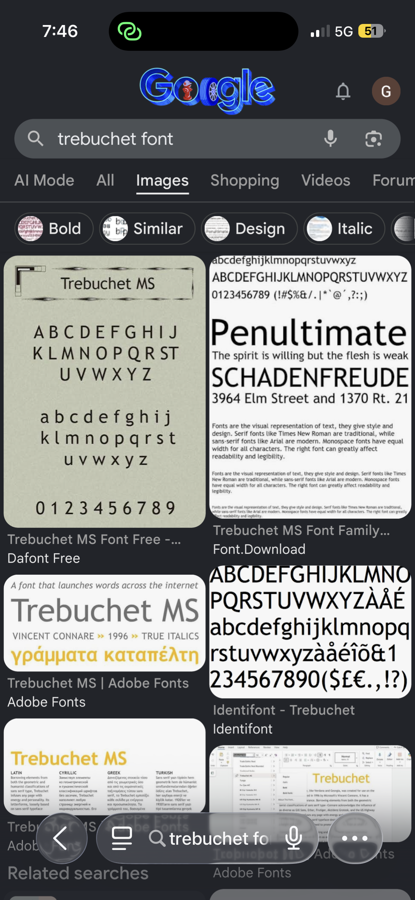
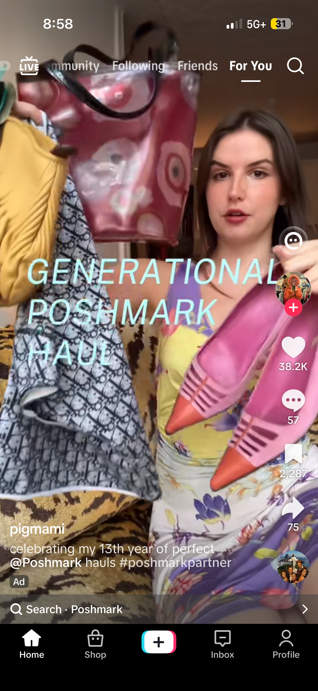
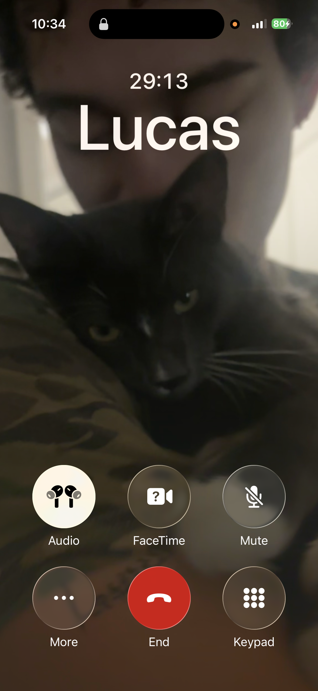

In the morning, I’m usually
very groggy and tired, so in
order to wake myself up,
I tend to scroll on my phone.
Today, I scrolled on Instagram
for a while.

Hi, I'm Gabriella!
Welcome to The Feed -- a day in my digital life,
through my eyes! Enjoy scrolling through a full day
of my technology use and the reasoning behind
each application I used!


Every morning I wake up to an
alarm, so the first thing I do
is grab my phone to turn it off.
I usually wake up around 8 on
weekdays, and later on weekends.
In the morning, I’m usually
very groggy and tired, so in
order to wake myself up,
I tend to scroll on my phone.
Today, I scrolled on Instagram
for a while.

Throughout the day, I am
constantly listening to music.
At this time of day, I played
one of my playlists while doing my
makeup and getting eady for
the day.

I like to sell my clothes on
Depop, and today I had an item
that I needed to ship out, so I
spent a few minutes preparing my
package and getting my shipping
code. I then, of course, scrolled
for a little while to see what
Depop had to offer

One of my favorite things is
taking photos of things I enjoy
throughout my day, and today I was
making a flower arrangement for my
room and decided to take a photo
of the process.
I’ve been working on learning
Danish for a few weeks now, so
I had to continue my streak by
doing 10 minutes of practice.
Pinterest is probably one of my
favorite forms of media; I find
a lot of inspiration from it,
whether that be fashion, home,
cooking, or design ideas. I like
to spend a little bit of time
scrolling while listening to music;
I find it very therapeutic.
Later in the day, I went on my
daily walk through the park and
stumbled upon an outdoor concert
that Golden Gate Park was hosting
for Labor Day, so I decided to record
it because it was super cool!

I use Google randomly during
different times of the day; in
this particular instance, I was
googling a certain font type because
I was brainstorming for a project

After walking for a few miles in
the park, I was feeling relaxed,
tired, and ready to cool down from
the day, so I scrolled through
TikTok for a little while before
starting my homework
It was time to finally start my
homework, so I logged into Canvas
and began checking my assignments
and making a list of everything I
needed to do

Finally, to end my day, I completed
my homework and finally got to relax
while calling my boyfriend, who lives
back in my hometown. We often switch
from FaceTime to a regular phone call
to catch up while apart.
⬆ Back to top ⬆